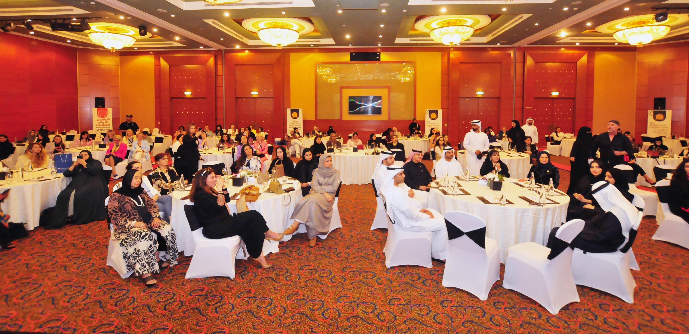

تحية طيبة وبعد،





Woibex Established Since: May 13, 1989 00:00:00:

27+
Years in Business

1250+
Successful Events

175000+
Satisfied Clients

340+
Media Partners

275+
Platinum Partners

180+
Other Supporters
الموضوع: مشاركة قياديات مؤسستكم في فعاليات الكونغرس
(الرؤية العالمية للكونغرس )قصص نجاح النساء في القارات السبع
بدايةً يطيب لنا أن نعرب عن تقديرنا الكبير لجهودكم المستمرة في دعم تميز القياديات، ما يعبّر بشكل واضح عن أولوية دعم وتطوير المرأة في تحقيق التنافسية العالمية للدولة ومؤسساتها، والمنظومة القيادية لمسيرة المرأة وركائز التميز.
في هذا السياق وبمناسبة يوم المرأة العالمي، ودعماً للرؤية العالمية الحكومية والاقتصادية، للملوك، رؤساء الدول، رؤساء الوزراء، والوزراء، ومحافظي الولايات والاقاليم وعمداء ورؤساء بلديات المدن، رؤساء الجامعات، أصحاب الرؤى العالمية وقادة شركات الأعمال وبدعم من وسائل الإعلام والمؤسسات الدولية الرسمية وبما يتماشى مع الجهود المجتمعية العالمية من أجل تحقيق وتعزيز التمكين والتوازن بين الجنسين، وتطوير القدرة التنافسية العالمية للمرأة، أصبح هناك توافق عالمي حول الاستراتيجيات الدولية، التي تهدف إلى الاهتمام بقيادة وتطويرها وتعزيز النمو الاقتصادي للمرأة وإلهام جيل الشباب لتطوير المبادرات العالمية في مختلف القطاعات والصناعات وذلك عبر القارات السبع.
في هذا الاطار، تتشرف داتاماتكس وبالتعاون مع المؤسسات الحكومية وقطاع الاعمال، وبدعم من معهد جائزة الشرق الأوسط للتميز بتقديم الكونغرس الدولي السابع والعشرين للقيادات، في الفترة من 17 إلى 20 فبراير 2025 في دبي، دولة الإمارات العربية المتحدة، تحت شعار "قصص نجاح المرأة في القارات السبع" بحضور ومشاركة القياديات وصناع القرار وقادة الأعمال لمناقشة الاستراتيجيات الحديثة لتطوير ركائز وحوكمة استراتيجيات تطوير قياديات القدوة، والاطلاع على أفضل الممارسات في تطوير المرأة القيادية الشابة.
بهذه المناسبة، يشرفنا مخاطبتة مؤسستكم بخصوص مشاركة القياديات في فعاليات الكونغرس، ستكون مشاركتهن بمثابة سفراء لمؤسستكم، حيث يعزز من نجاح المساعي التطويرية لتمكين وقيادة المراة، بالإضافة إلى تطوير الشراكات المستدامة لتعزيز العلاقات المؤسسية العالمية.
هذا وبناءً على الدور القيادي للكوادر النسائية في مؤسستكم، ورغبة في تطوير استراتيجيات تنافسية الكوادر النسائية نتمنى مشاركة القياديات من جميع القطاعات والإدارات والأقسام والفروع التنظيمية والإدارية المختلفة في مؤسستكم الموقرة في فعاليات الكونغرس. حيث يُعدُّ الكونغرس فرصة هامة للتعرف على أفضل الممارسات، وتنافسية القيادة والإدارة، والعمل على النهوض باستراتيجيات تطويرية حديثة ومناقشة التحديّات وطرح الحلول والمقترحات، وذلك انطلاقاً من أهمية الدور الاستراتيجي لمؤسستكم في تطوير مفاهيم الأداء المؤسسي وعلم الإدارة الحديث، والعمل على التواصل وتبادل الخبرات وسبل اتخاذ القرارات وتنويع مصادر المعلومات وتبادل الخيرات الدولية.
هذا ويهدف الكونغرس إلى استقطاب أفضل الممارسات المؤسسية العالمية لريادة المرأة وتمكينها من الانتقال إلى قياديات القدوة، والاستفادة من ما تمتلكه من المعرفة والخبرة في تطوير المجتمع، حيث يشهد الكونغرس مشاركة الشخصيات النسائية البارزة من كلا القطاعين الحكومي والخاص وذلك للتباحث وتسليط الضوء على نجاحات القياديات في هذا الحدث الذي يُعدُّ من أقوى المنصات الدولية والذي أصبح يُشكّل إنجازاً وحدثاً استراتيجياُ باعتباره أكبر حدث للقياديات في إطار تواجد المرأة في المحافل الدولية.
وتقبلوا فائق الاحترام والتقدير،
علي الكمالي
المدير العام
المدير العام
الكونغرس الدولي السابع والعشرون للقيادات تزامنًا مع الاحتفال بيوم المرأة العالمي
التاريخ:
17-20 فبراير2025 دبي، الإمارات العربية المتحدة.
المشاركون:
القياديات من المؤسسات الإقليمية والعالمية
المتحدثون:
قياديات القدوة والخبراء من المؤسسات الإقليمية والعالمية
الشركاء:
المؤسسات الحكومية وقطاع الأعمال الإقليمية والعالمية .
شهادات الحضور:
إصدار شهادات الحضور للمشاركين المسجلين في الحدث فقط.
أفضل الممارسات:
الاستفادة من أفضل الممارسات القيادية والمؤسسية المطروحة.
موقع الكونغرس:
www.woibex.com
البريد الإلكتروني:
info@datamatixgroup.com
يتم دعم الكونغرس من قبل المؤسسات الرسمية العالمية:
- مؤسسات ووكالات الأمم المتحدة.
- البنك الدولي.
- صندوق النقد الدولي.
- منظمة التجارة العالمية.
- منظمة التعاون الاقتصادي والتنمية – OECD
- المؤسسات الدولية الاخرى المتعلقة بتنمية المرأة.
وتحظى الفعاليات بدعم وسائل الإعلام التالية:
- المجلات و الصحف الإلكترونية.
- المحطات التلفزيزنية والإذاعية.
- وكالات الانباء والأخبار.
- مؤسسات ووسائل الإعلام العالمية.
استراتيجية عرض أعلام دول المُشاركين في مكان انعقاد الكونغرس
- عندما يصل إجمالي عدد المشاركين من دولة معينة إلى أكثر من خمسة مشاركين.
- أو عندما يصل إجمالي الشركاء الاستراتيجيين من دولة معينة إلى أكثر من ثلاثة شركاء.
يتم دعم هذا الحدث من قبل القادة والقياديات والمتحدثين في الكونغرس:
- القياديات في الشركات العالمية.
- سيدات ورائدات الأعمال العالمية.
- المؤثرات والمضيفات بودكاست العالمية.
- خبراء المحتوى الالكترونية.
- مضيفو البودكاست العالميون.
- الأكاديميات وخبراء التعليم.
- خبراء صحة المرأة.
الكونغرس الدولي السابع والعشرين للقيادات
(الرؤية العالمية للكونغرس )قصص نجاح النساء في القارات السبع
بدايةً يطيب لنا أن نعرب عن تقديرنا لجهودكم المستمرة في دعم تميز الكوادر النسائية، ما يعبّر بشكل واضح عن أولوية دعم وتطوير المرأة في تحقيق التنافسية العالمية للدول ومؤسساتها، والمنظومة القيادية لمسيرة المرأة وركائز التميز.
في هذا السياق وبمناسبة يوم المرأة العالمي، ودعماً للرؤية العالمية الحكومية والاقتصادية، للملوك، رؤساء الدول، رؤساء الوزراء، والوزراء، ومحافظي الولايات والاقاليم وعمداء ورؤساء بلديات المدن، رؤساء الجامعات، أصحاب الرؤى العالمية وقادة شركات الأعمال وبدعم من وسائل الإعلام والمؤسسات الدولية الرسمية وبما يتماشى مع الجهود المجتمعية العالمية من أجل تحقيق وتعزيز التمكين والتوازن بين الجنسين، وتطوير القدرة التنافسية العالمية للمرأة، أصبح هناك توافق عالمي حول الاستراتيجيات الدولية، التي تهدف إلى الاهتمام بقيادة وتطويرها وتعزيز النمو الاقتصادي للمرأة وإلهام جيل الشباب لتطوير المبادرات العالمية في مختلف القطاعات والصناعات وذلك عبر القارات السبع.
ظهرت تحديات عديدة بشأن قيادة المرأة اقليمياً وعالمياً، لذا تتخذ المؤسسات العالمية خطوات قيادية لتطوير مجتمع عالمي تستطيع المرأة من خلاله أن تزدهر وتساهم في التطوير. إنَّ استخدام الاستراتيجيات القائمة على المعارف الدولية والدعم الموجه للمرأة في المؤسسات الحكومية وقطاع الأعمال يدل على إدارة الحوكمة المؤسسية المسؤولة القادرة على التطوير والابتكار في هذا التوجه التطويري العالمي.
حيث تُعدُّ الجهود الحثيثة التي تبذلها المؤسسات الحكومية وقطاع الأعمال وإيمانها الراسخ في تمكين المرأة من أجل المشاركة في دعم وتطوير الإقتصاد الوطني أمرًا بالغ الأهمية يضمن التمثيل الناجح في جميع جوانب المسؤلية الحكومية وإدارة الإقتصاد الوطني.
في هذا الاطار، تتشرف داتاماتكس وبالتعاون مع المؤسسات الحكومية والإقتصادية العالمية، وبدعم من معهد جائزة الشرق الأوسط للتميز بتقديم الكونغرس الدولي السابع والعشرين للقيادات، في الفترة من 17 إلى 20 فبراير 2025 في دبي، دولة الإمارات العربية المتحدة، تحت شعار "قصص نجاح المرأة في القارات السبع" بحضور ومشاركة القياديات وصناع القرار وقادة الأعمال لمناقشة الاستراتيجيات الحديثة لتطوير ركائز وحوكمة استراتيجيات تطوير قياديات القدوة، والاطلاع على أفضل الممارسات في تطوير المرأة القيادية الشابة.
في هذا السياق، مشاركة القياديات في فعاليات الكونغرس، حيث ستكون بمثابة سفراء للمؤسسات، حيث يعزز من نجاح المساعي التطويرية للمراة، بالإضافة إلى تطوير الشراكات المستدامة لتعزيز العلاقات المؤسسية العالمية وذلك بناءً على الدور القيادي الكبير للكوادر النسائية في المؤسسات، ورغبة في تطوير استراتيجيات تنافسية الكوادر النسائية في جميع القطاعات والإدارات والأقسام والفروع التنظيمية والإدارية المختلفة في المؤسسات.
حيث يُعدُّ الكونغرس فرصة هامة للقياديات للتعرف على أفضل الممارسات، وتنافسية القيادة والإدارة، والعمل على النهوض باستراتيجيات تطويرية حديثة ومناقشة التحديّات وطرح الحلول والمقترحات، وذلك انطلاقاً من أهمية الدور الاستراتيجي للمؤسسات في تطوير مفاهيم الأداء المؤسسي وعلم الإدارة الحديث، والعمل على التواصل وتبادل الخبرات وسبل اتخاذ القرارات وتنويع مصادر المعلومات وتبادل الخيرات الدولية. هذا ويهدف الكونغرس إلى استقطاب أفضل الممارسات المؤسسية العالمية لريادة المرأة وتمكينها من الانتقال إلى قياديات القدوة، والاستفادة من ما تمتلكه من المعرفة والخبرة في تطوير المجتمع.
هذا ويشهد الكونغرس مشاركة الشخصيات النسائية البارزة من كلا القطاعين الحكومي والخاص وذلك للتباحث وتسليط الضوء على نجاحات القياديات في هذا الحدث الذي يُعدُّ من أقوى المنصات الدولية والذي أصبح يُشكّل إنجازاً وحدثاً استراتيجياُ باعتباره أكبر حدث للقياديات في إطار تواجد المرأة في المحافل الدولية.
لماذا مؤسسات القارات السبع الحكومية وقطاع الأعمال والمؤسسات الرسمية
يجب أنْ تُشاركَ في الكونغرس الدولي السابع والعشرين للقيادات النسائية؟
في هذا السياق، نتمنى دعم المؤسسات والقاده، بخصوص مشاركة الكوادر النسائية في فعاليات الكونغرس، حيث تشارك المرأة في تقديم أفضل الممارسات الدولية لتبادل ونقل الخبرات، هذا وتقوم القياديات من مختلف الدول بتقديم قصص نجاحهن والإنجازات، مِمَّا يُمكِّن المؤسسات دعم الاستراتيجيات الفعَّالة لتمكين المرأة، بالإضافة إلى ذلك، تبين هذه المشاركة الالتزام بتعزيز التعاون والحوار الدولي حول دعم الاستراتيجيات التي تدعم تمكين وقيادة المرأة عالمياً. حيث تدعم هذه المشاركة المبادرات التي تُعَزِزُ من مشاركة المرأة في إدارة المؤسسات ودعم التعليم والاقتصاد الوطني والعالمي بشكل كبير.
قارة أفريقيا
لعبت الكوادر النسائية دورًا محوريًا في التغيير الاجتماعي، وحقوق المرأة، وتمكين المجتمعات الإفريقية، وذلك من خلال التعليم، وريادة الأعمال، والقطاعات الحيوية الأخرى. تعد إفريقيا سوقًا ناشئة ومعروفة بتركيبتها السكانية الشبابية. لذا، ينبغي على المؤسسات والشركات الأفريقية والعالمية المشاركة في الكونغرس لدعم القياديات والتعلم من تجاربهن الناجحة في مختلف القطاعات حيث يمكن لهذه الجهات الاستفادة من الأفكار المطروحة لتطوير استراتيجيات تعزز المساواة بين الجنسين، وتمكين المرأة وقيادتها، وتحسين الوصول إلى التعليم والرعاية الصحية، وتعزيز التمكين الاقتصادي، وتحقيق التوازن بين الجنسين.
قارة آسيا
تفوقت المرأة الآسيوية في مختلف المجالات، بما في ذلك التكنولوجيا، والأعمال، والفنون، حيث كسرن الحواجز وحققن نجاحًا ملحوظًا كمديرات تنفيذيات، وعالمات، هذا ونظرًا لأن آسيا تُعَد مركزًا رائدًا لصناعة المال والأعمال، يجب على المؤسسات الحكومية وقطاع الأعمال في اسيا التأكد من أن الاستدامة أصبحت جزءًا لا يتجزأ من الثقافة المؤسسية، ودعم النساء اللاتي يُسَاهِمْنَ بشكل كبير في الاقتصاد الآسيوي. لذلك يجب المشاركة في الكونغرس والحرص على تعاون مع الكوادر النسائية على المستوى العالمي في تطوير وتبادل أفضل الممارسات ونقل الخبرات. كما يجب تشجيع العالم على الشراكة المؤسسية مع قارة آسيا، وتبادل الحلول المبتكرة لتمكين المرأة في جميع المجالات. من خلال دعم رائدات الأعمال اللاتي يدفعن إلى النمو الاقتصادي والتقدم الاجتماعي، يمكن لمشاركة الكوادر النسائية الآسيوية تعزيز معرفتهن واعتماد ممارسات الإدارة الحديثة لتحقيق الاستدامة.
قارة أوروبا
أسهمت المرأة الأوروبية بشكل كبير في مختلف القطاعات مثل الأدب والعلوم والتكنولوجيا، وحققت إنجازات رائدة في مجالات مثل الطب والهندسة والطيران والصناعة وقطاع الأزياء. كون أوروبا قارة رائدة قائمة على المعرفة، فإن مشاركة القياديات النسائيات في الكونغرس ستمثل دعمًا كبيرًا لتعزيز الفرص القيادية والاقتصادية للمرأة وتبادل الخبرات. حيث تستطيع الشركات الأوروبية التعلم من التحديات المطروحة لسد الفجوة الرقمية بين الجنسين وزيادة تمثيل المرأة في الأدوار القيادية، وتعزيز التوازن بين الجنسين، ودعم ريادة الأعمال النسائية، وتعزيز التنوع في مجالات إدارة الشركات، وتحفيز النمو المزدهر في القارة.
قارة أمريكا الشمالية
حققت المرأة في أمريكا الشمالية دورًا بارزًا في التطوير والقيادة وتعزيز المساواة بين الجنسين، وسطَّرن خطوات متقدمة في مجالات متنوعة مثل الأعمال والرياضة والتصنيع والقطاعات الرائدة الأخرى. يُعرف المشهد القاري بمراكزه البحثية والطبية والتكنولوجية، ووجود الشركات الكبيرة والناشئة، بالإضافة إلى قطاعات صناعية أخرى مثل الطيران. من الجدير بالاقتراح أن تستفيد المؤسسات وقطاع الأعمال في القارة من فعاليات الكونغرس كمنصة لتسليط الضوء على المبادرات الهادفة إلى تعزيز تمكين المرأة. يمكن استخدام هذه المنصة لمشاركة النماذج الناجحة عالميًا بهدف دعم دور المرأة في مجالات العلوم والتكنولوجيا والهندسة والرياضيات، وتعزيز التنوع من خلال اعتماد استراتيجيات عالمية.
قارة أمريكا الجنوبية
لعبت المرأة في أمريكا الجنوبية دورًا بارزًا في الحفاظ على البيئة والثقافة، مما أثرى مجتمعاتهن بقدراتهن القيادية والإبداعية. تتميز القارة بمواردها الطبيعية الوفيرة مثل الغاز والنفط والمعادن والتعدين، إلى جانب فرص التصنيع في مختلف القطاعات، مما يجعلها وجهة جذابة. من الضروري مشاركة المؤسسات الحكومية وشركات الأعمال من قارة أمريكا الجنوبية في فعاليات الكونغرس، نظرًا للنجاحات الكبيرة التي حققتها القارة في إدارة القطاعات الخاصة بالزراعة والصناعات المرتبطة بها. يجب أن تسهم مشاركتهن وقيادياتهن بشكل كبير في الحوار العالمي حول تمكين المرأة. من خلال المشاركة في الكونغرس وتبادل استراتيجيات لمعالجة التحديات وتعزيز المساواة بين الجنسين، حيث تستطيع المؤسسات الحكومية والقطاعات الاعمال والأخرى مثل الاستثمار والتعليم والتدريب دعم التنمية الاقتصادية بشكل فعّال.
قارة أستراليا ونيوزيلندا
حققتْ المرأة في القاره نجاحًا ملحوظًا في مجالات مثل: الطب والطيران والحفاظ على البيئة. أستراليا ونيوزيلندا، على الرغم من بعدهما، قارتان مترابطتان عالميًا، وتُقدِمَان منظورًا فريدًا بشأن المساواة بين الجنسين وتمكين المرأة. حيث تعمل الحكومات في القاره إلى جانب العديد من المؤسسات العالمية الرسمية بفعالية على معالجة الفوارق بين الجنسين وإنشاء مجتمع متماسك، ولذلك ينبغي على المؤسسات الحكومية والشركات والقادة تعزيز الروابط العالمية من خلال المشاركة في الكونغرس، الذي يهدف إلى تسليط الضوء على جهودهم الرامية لتعزيز القيادة النسائية وريادة الأعمال. إنَّ دعم المبادرات التي تؤيد التقدم الوظيفي للمرأة والاستقلال الاقتصادي، يمكنها دفع التنمية المستدامة والازدهار في العالم.
القارة القطبية الجنوبية
قدمتْ المراة القيادية والباحثات مساهمات جَمَّةً في البحث والاستكشاف، مما أدَّى إلى تعزيز فهمنا لتغير المناخ والتنوع البيولوجي والاستدامة البيئية. على الرغم من أنَّ القارة القطبية الجنوبية ليست موطنًا لسكان دائمين، إلا أنَّه يجب على محطات الأبحاث الدولية المُشارَكة في الكونغرس لإظهار التزامها بالمساواة بين الجنسين في المجتمع العلمي وإظهار دور المرأة في المشاركة واكتشاف المعرفة. وعليهم أيضًا أن يستكشفوا كيف يمكن للمرأة أن تلعب دورًا أكثر أهمية في هذا الجزء من العالم. نقترح أن تقوم المؤسسات والقادة المعنيون بتبادل الأفكار حول تعزيز مشاركة المرأة في الأبحاث القطبية وخلق بيئة عمل داعمة في جميع أنحاء المنطقة. علاوة على ذلك، فإنَّ تعزيز المساواة بين الجنسين في أبحاث القارة القطبية الجنوبية من الممكن أن يُشكِّلَ مثالًا إيجابيًا للتعاون العلمي والابتكار العالمي.
كيف سيجد المستثمرون مشروعهم المليونير الناجح التالي
مع القياديات وسيدات الأعمال البارزات في العالم
سَتُتَاحُ فرصٌ مهمةٌ لدى المستثمرين وقادة الأعمال خلال الكونغرس للقاء سيدات ورائدات الأعمال، والشخصيات القيادية والاستماع إلى أفكارهن، والتعلم من رؤاهم، واستخلاص أفكار مبتكرة جديدة حول كيفية دعم والاستثمار في تلك المشاريع، حيث سيتيح إمكانية العثور على مشروع المليونير الناجح القادم مع هؤلاء رائدات الأعمال.
في هذا السياق، نقترح بدعم المستثمرين لتزويد سيدات ورائدات الأعمال وخاصة الشابه بالأفكار الجديدة، حيث يلعبن دورًا حاسمًا في دعم وقيادة النمو الاقتصادي والتنمية العالمية وعبر القارات السبع. هذا ومن خلال الاستثمار في المبادرات التي تقودها سيدات ورائدات الأعمال، يمكن للمستثمرين الاستفادة من مجموعة متنوعة من وجهات النظر والأفكار والابتكارات التي لديها القدرة على مواجهة التحديات العالمية المُلحة وفتح فرص جديدة.
فإنَّ دعم سيدات ورائدات الأعمال لا يؤدي فقط إلى تعزيز المساواة بين الجنسين فحسب، بل يُعزز أيضاً حركة النمو الاقتصادي الشامل العالمي، وخلق فرص العمل، والتنمية الاجتماعية. فإنَّ الاستثمار في الشركات المملوكة لسيدات ورائدات الأعمال يمكن أن يحقق عوائد كبيرة على الاستثمار والمساهمة في تقدم المجتمع.
في هذا الإطار وبالتزامن مع الكونغرس تتشرف داتاماتكس بالإعلان عن تنظيم معرضٍ دولي لأفضل المشاريع والشركات لسيدات ورائدات الأعمال في القارات السبع، وذلك لعرض الإنجازات والمساهمات لرائدات وقادة الأعمال في الاقتصاد العالمي. حيث تجسد هذه المشاريع، التي تقودها السيدات ورائدات الأعمال أصحاب رؤيا اقتصادية ثاقبة، مثالًا على الابتكار والمرونة والالتزام بالتميز، ومزيدًا من صفات أخرى.
حيث تمتد هذه المشاريع لتشمل صناعات متنوعة مثل التكنولوجيا والرعاية الصحية والتمويل والاستدامة، وتمثل كل مؤسسة مثالًا ساطعًا للنجاح، لم تقم هؤلاء سيدات ورائدات الأعمال بتأسيس أعمال مزدهرة فحسب، بل ساهمن أيضًا في التنمية الإقتصادية الدولية المتميزة، وخلقن فرص عمل، وألهمن أجيال المستقبل من القياديات النسائية.
لذلك، فإننا نشجع جميع القياديات وسيدات ورائدات الأعمال على المشاركة وعرض مشاريعهن من خلال هذا الحدث أمام المستثمرين والقياديات المتفوقة في القارات السبع والحاضرين رفيعي المستوى، من أجل جذب الاستثمار وإقامة علاقات تعاون مع القادة ذوي التفكير الاقتصادي المماثل وتوسيع نطاق وصولها إلى السوق العالمية من خلال افضل الاستراتيجيات الاقتصادية الدولية.
هذا وتتمثل المشاركة في الكونغرس رؤيةً لامثيل لها وفرصًا للتواصل والاستثمار، مما يسمح لسيدات ورائدات الأعمال بالتواصل مع المستثمرين والشركاء والمتعاملين الجدد. من خلال عرض أعمالهن على الساحة الدولية، كما يمكنهن الحصول على رؤى قيمة والوصول إلى أسواق جديدة وتسريع نمو شركاتهن .
في حين تجسد رحلة المرأة في عالم ريادة الأعمال روح التصميم والابتكار، حيث تتغلبن على التحديات، ويغتنمن الفرص، ويقدن التغيير الإيجابي في المجتمعات العالمية. من خلال عرض إنجازاتهن في الكونغرس، ستحظى سيدات ورائدات الأعمال بالتقدير الذي يستحقنه، ليصبحن نماذج يُحتذى بها كرواد أعمال طموحات في جميع أنحاء العالم.
إن قصصهن عن التصميم والمثابرة والنجاح تتجاوز الحدود، وتصل إلى القارات السبع، مما يحفز الأفراد على تحقيق أحلامهم وإعادة تعريف ما هو ممكن في عالم الأعمال. وبينما نحتفل بهؤلاء القياديات وإنجازاتهن، نشيد بالقوة التحويلية للقيادة النسائية والإمكانات الهائلة التي تحملها لتشكيل مستقبل أكثر شمولًا، وازدهارًا، إن نجاحاتهن ليست مجرد إنجازات فردية، بل هي خطوات مهمة نحو بناء مجتمع يعترف بإمكانات الجميع ويتيح الفرص للكل.
معهد جائزة الشرق الأوسط للتميز
تزامناً مع رؤية معهد جائزة الشرق الأوسط للتميز 2030، والتي تهدف إلى تطوير واستدامة التنافسية العالمية المؤسسيّة والقيادية في منطقة الشرق الأوسط، وانطلاقاً من دوره في تسليط الضوء على أحدث المُمارسات والإنجازات المؤسّسية والقيادية والتميز المستدام، يواصل المعهد رحلته القيادية لدعم وتطوير منظومة القيادة والتميز، وتطبيق علم الإدارة التي تدعم رؤية وأهداف المنطقة تجاه التحول إلى الاقتصاد الرقمي الحديث والمتكامل، في ظل تقنيات الجيل الخامس (5G)، والثورة الصناعية الخامسة، وفي إطار صياغة قواعد تطويرية حديثة للتنافسية الوطنية والمؤسسية والقيادية، ولتسليط الضوء على أفضل الإنجازات التي تدعم رؤية المنطقة نحو التحول الشامل في ظل التقنيات الحديثة.
حيث كرّس المعهد جهوده ومنذ (35) عاماً في رعاية وتكريم القدرات القيادية وأصحاب الإنجازات والكفاءات القيادية، والنجاحات الوطنية المؤسّسية والقيادية المستدامة في مختلف القطاعات الحكومية وقطاع الأعمال، والمؤسسات الاجتماعية، والاقتصادية، والإعلامية، والتكنولوجية، وإدارة المعرفة، والابتكار، والإدارة، وقيادة المرأة، وبما يتناسب مع معايير التنافسية العالمية المبنية على أسس الاقتصاد المعرفي الحديث، لدعم بقاء منطقة الشرق الاوسط في طليعة المنظومة المؤسسية في الإبداع والقيادة في الاقتصاد العالمي الرقمي.
كما ركز المعهد على تطوير وتقديم المعرفة بشأن التكامل التنظيمي والمؤسّسي، فضلاً عن مسيرته الفعالة تجاه عملية التحول الرقمي والنهوض بالحكومة والمدن الرقمية، وتطوير القدرة التنافسية لمختلف المدن الرقمية، في عصر الجيل الخامس (5G) والذكاء الاصطناعي، ومنظومة تقنيات البلوك شين وإنترنت الأشياء، وذلك من خلال تكريم أفضل الممارسات والكفاءات والقيادات في القطاعات المختلفة، حيث استخدم المعهد البحوث والدراسات الميدانية الإقليمية والعالمية في إدارة الاختيار للذين ساهموا في دعم مسيرة التطوير وبناء مستقبل المنطقة، والتي بدورها أدَّت إلى ترسيخ الأسُس والمبادئ القيادية في مختلف القطاعات، وهذا الأمر أسس قاعدة صلبة وقوية تمثل دوراً فعالاً في دعم مُبادرات التنمية والتطوير الإداري والتكنولوجي في منطقة الشرق الأوسط، كما ساهم المعهد في استقطاب أفضل الممارسات العالمية للمؤسسات الحكومية وقطاع الأعمال إلى المنطقة، والتي تلعب دوراً متميزاً في دعم وقيادة مسيرة التنمية ودعم جهود التحول الإلكتروني الشامل نحو الحكومة الرقمية، وتطوير القدرة التنافسية للمدن الذكية في عصر الذكاء الاصطناعي.
هذا وعلى مدى (35) عاماً الماضية ساهم المعهد في تطوير مسيرة القيادة والمنظومة المؤسسية الشاملة ومستوى الكفاءة الإدارية بناءً على معايير التنافسية العالمية، بما يدعم القادة والمؤسسات من اتخاذ القرارات المناسبة بهدف الارتقاء بمستوى الأداء الإداري وفقاً لمنظومة علم الإدارة الحديثة، وتطوير الإدارة المعرفية والاقتصادية، والعمل على الارتقاء بمستوى الكفاءة والفعالية، بما يواكب المتغيرات الحديثة ومؤشرات التنافسية العالمية، حيث نجح المعهد في المساهمة في دعم وتطوير ثقافة القيادة والتطوير المؤسّسي الشامل، بهدف رفع مستوى الكفاءة الإدارية المؤسّسية للمنطقة بناءً على التنافسية العالمية.
حيث ساهمت تلك الاستراتيجيات والأحداث في تقليص الفجوة الرقمية والاقتصادية والمعرفية بين منطقة الشرق الأوسط وبقية دول العالم، وكان لها دورًا محورياً في جعل العالم قرية واحدة، مما أظهر مردوداً واضحاً في المساهمة الفعالة في النمو والازدهار الوطني المتميز في تلك المرحلة الفارقة نحو تطبيق استراتيجيات علمية مؤسسية حديثة بشأن التطوير، وذلك تزامناً مع رؤية معهد جائزة الشرق الأوسط للتميز.
هذا وتعد فعاليات معهد جائزة الشرق الأوسط للتميز من بين أهم الأحداث العالمية لقادة الشركات والمؤسسات الحكومية، حيث تساهم هذه الفعاليات في تطوير استراتيجيات تقليص الفجوة الرقمية والاقتصادية والمعرفية في المنطقة بشكل عام، وذلك من خلال حضور الفعاليات والتباحث وتطوير الشراكات العالمية، وتوطيد العلاقات الدولية بين المؤسسات وصناع القرار والمؤسسات الإعلامية، وذلك من أجل التواصل وتعزيز الترابط والتكامل وتبادل الخبرات وتقريب الحضارات والثقافات العالمية، حيث يلتقي الشرق بالغرب والجنوب بالشمال فكراً ومنهجاً وأسلوباً من أجل تحقيق استدامة التطوير.
هذا وبهدف التواصل وتعزيز الترابط والتكامل المؤسّسي والقيادي لتحقيق وتعزيز التميز والتنمية المستدامة ضمت فعاليات معهد جائزة الشرق الأوسط للتميز القادة وصناع القرار من مختلف المؤسّسات والعالمية، لإبراز مساهمات القيادات والمؤسّسات وفي مقدمتها متابعة الابتكار في الاستراتيجيات الحكومية والاقتصادية والتجارية، كونها تُعدُ تعزيزًا إيجابيًا وهامًا للنمو والتنمية في منطقة الشرق الأوسط تستحق عليه الثناء والإشادة والتكريم.
يقدم معهد جائزة الشرق الأوسط للتميز
"جائزة قصص نجاح المرأة في القارات السبع"
التاريخ:
18 فبراير2025 دبي، الإمارات العربية المتحدة.
الترشحات:
www.meawards.com
المشاركين:
المؤسسات الحكومية، قطاع الاعمال والمنظمات الدولية
الشركاء:
المؤسسات الحكومية والشركات والمنظمات الدولية
التغطية الإعلامية:
المؤسّسات إلاعلامية والبوابات إلالكترونية
للتواصل:
info@meawards.com
الكونغرس:
www.woibex.com
بدايةً يطيبُ لنا أنْ نَعْرِبَ عن تقديرنا للجهودِ المستمرة في دعم تميز قياديات القدوة العالمية، والنماذج التي يجب أنْ يُحتَذَى بها، ودعم التأثير الاستثنائي للمرأة القيادية، ما يُعبّر بشكلٍ واضحٍ عن أولوية دعم وتطوير المرأة لتحقيق التنافسية العالمية للدول ومؤسساتها، وتطوير المنظومة القيادية لمسيرة المرأة العالمية وركائز التميز للقياديات.
في هذا السياق وفي إطار الرؤية العالمية الحكومية والاقتصادية، للملوك، واولياء العهود ورؤساء الدُّوَل، ورؤساء الوزراء، والوزراء، ومُحافظي الولايات والاقاليم وعُمداء ورؤساء بلديات المدن، ورؤساء الجامعات، أصحاب الرؤى العالمية وقادة شركات الأعمال وبدعم ومشاركة وسائل الإعلام والمؤسسات الدولية الرسمية وبما يتماشى مع الجهود المجتمعية العالمية من أجل تحقيق وتعزيز التمكين والتوازن بين الجنسين، وتطوير القدرة التنافسية العالمية للمرأة، أصبح هناك توافق عالمي حول الاستراتيجيات الدولية، التي تهدف إلى الاهتمام بالقياديات وتطويرها وتعزيز النمو الاقتصادي للمرأة وإلهام جيل الشباب؛ لتطوير المبادرات العالمية في مختلف القطاعات والصناعات وذلك عبر القارات السبع.
يتشرف معهد جائزة الشرق الأوسط للتميز، بالتعاون مع المؤسسات الحكومية والاقتصادية العالمية وبدعم من القادة وأصحاب القرار بتقديم "جائزة قصص نجاح المرأة في القارات السبع" وذلك بحضور القادة وصناع القرار والقياديات في إحتفالية خاصة بتكريم الفائزات في تمام الساعة 8 مساء يوم الثلاثاء 18 فبراير 2025، في دبي.
يُكرّم المعهد القياديات اللاتي يمارسنَّ أدواراً رياديةً في القطاعين الحكومي والخاص، وبات وجودهنَّ في المؤسّسات علامة دولية بارزةً، ولهنَّ مساهمة كبيرة وتأثيراً ملموساً في دعم مسيرة التطوير القيادي والمؤسّسي، كما تركز معايير الجائزة على قياديات القدوة والنماذج القيادية اللاتي ساهمن في تطوير المنظومة المؤسّسية وقياديات القدوة والنماذج القيادية في القطاعات المختلفة ولهنَّ أدواراً قياديةً متميزةً، وبات وجودهنَّ يُشكل علامة فارقة في المؤسّسات، وشاركنَّ بفاعلية في دعم مسيرة التطوير القيادي، وكان لهنَّ أدواراً محوريةً في التطوير المؤسّسي، والاقتصادي، والتكنولوجي، والإداري، وساعدنَّ في تطوير المنظومة المؤسّسية والتحول الرقمي المؤسّسي الشامل في العالم، مما يعزز تقدم المؤسّسات وفقاً لمعايير التنافسية العالمية، ورائدات الأعمال اللاتي لهنَّ أدواراً رياديةً اقتصادية في تطوير المؤسّسات وساهمنَّ في تطوير المنظومة الاقتصادية العالمية، وساعدنَّ المؤسّسات والكوادر على تحقيق أفضل الممارسات والإنجازات في المشاريع الاقتصادية، وتطوير منظومة الإبداع والابتكار، واستدامة الخدمات الرقمية المؤسّسية.
في هذا السياق، تساهم الجائزة بدعم القياديات في مجالات تخصصهن، حيث تمثل كل قيادية وجهًا من التميز والقيادة، مما يُلهم القياديات الاخريات في جميع أنحاء العالم على تحقيق أحلامهن الكبيرة والمتابعة والاستمرار، حيث تحتفل الجائزة بإنجازات ومساهمات القياديات في مختلف القارات السبع ويُعزز التواصل والتعاون القياديات عالميا لتعزيز تبادل الخبرات المشتركة. فإنَّ الاحتفال بإنجازات المرأة يبعث رسالة يُلهم الأجيال القادمة للسعي نحو تحقيق القيادة والنجاح. حيث تلعب هذه الجائزة دورًا حاسمًا في تعزيز وتمكين المرأة في جميع أنحاء العالم.
يقدم معهد جائزة الشرق الأوسط للتميز
جائزة الشرق الأوسط الرابعه والعشرون لتميز القياديات
التاريخ:
20 فبراير2025 دبي، الإمارات العربية المتحدة.
الترشحات:
www.meawards.com
للتواصل:
info@meawards.com
إستمراراً لرؤية معهد جائزة الشرق الأوسط للتميز، في تكريم أفضل الإنجازات القيادية، وبناء رؤية محورها الإرتقاء بالمسار المعرفي والتنافسي وتقديم أفضل ممارسات إدارة المعرفة والإبتكار سعياً نحو تعزيز الموقع التنافسي العالمي للمرأة، يقوم المعهد بتكريم القياديات من القطاعات المختلفة التي تلعب دوراً متميزاً من اللاتي أصبح وجودهن علامة فارقة في المؤسسات وساهمن في دعم مسيرة التطوير القيادي للمنطقة وكان لهن دور مؤثر في التطوير المؤسسي، الإقتصادي، التكنولوجي والإداري التي تعزز تقدم المؤسسات وفقاً لمعايير التنافسية العالمية، وتسليط الضوء على أفضل الممارسات القيادية التي استطاعت إحداث التغيير في المجالات المختلفة، وذلك من خلال الأسس والمبادئ والمرجعيات التي يحرص معهد جائزة الشرق الأوسط للتميز على تتبع خطواتها ومساراتها الإبداعية والقيادية اللازمة في إختيار القياديات وذلك من خلال المعايير والمنهجيات المعتمدة لتكريم إنجازات المرأة القيادية وتجاربها وإبداعاتها في القطاعات التي تركز عليها الجائزة:
- جائزة الشخصية النسائية العام.
- جائزة تميز المرأة القيادية في الرعاية الطبية والصحية.
- جائزة تميز المرأة القيادية في مجال إدارة المعرفة.
- جائزة تميز المرأة القيادية في قطاع التعليم.
- جائزة تميز المرأة القيادية في مجال الإدارة المؤسسية.
- جائزة تميز المرأة القيادية في قطاع الإعلام.
- جائزة تميز المرأة القيادية في قطاع الطيران.
- جائزة تميز المرأة القيادية في قطاع التطوير العقاري.
- جائزة تميز المرأة القيادية في القطاع الهندسي.
- جائزة تميز المرأة القيادية في قطاع السياحة.
- جائزة تميز المرأة القيادية في مجال الخدمات المجتمعية.
- جائزة تميز المرأة القيادية في مجال تطوير الأعمال المتميزة.
- جائزة تميز المرأة القيادية في التوظيف الذاتي.
- جائزة تميز المرأة القيادية في إدارة القطاعات الصحية.
- جائزة تميز المرأة القيادية في قطاع الصناعة.
- جائزة تميز المرأة القيادية في إدارة قطاع الرياضة.
- جائزة تميز المرأة القيادية في الإبداع والإبتكار.
- جائزة تميز المرأة القيادية في مجال التنمية الاقتصادية.
- جائزة تميز المرأة القيادية في قطاع تكنولوجيا المعلومات والاتصالات.
- جائزة تميز المرأة القيادية في مجال الفنون.
- جائزة تميز المرأة القيادية في قطاع البنوك والمال.
- جائزة تميز المرأة القيادية في قطاع الشرطة.
- جائزة تميز المرأة القيادية في القوات المسلحة.
- جائزة تميز المرأة القيادية في مجال الموضة والأزياء.
- جائزة تميز المرأة القيادية في قطاع النفط والغاز.
- جائزة تميز المرأة القيادية في إدارة المشاريع الكبيره.
- جائزة تميز أفضل مؤسسة لتنمية مواهب القياديات.
قائمة ويبكس 2025
لأبرز 100 قيادية في منطقة الشرق الأوسط
هذا وتزامناً مع احتفالات يوم المرأة العالمي، وإستمراراً لرؤية معهد جائزة الشرق الأوسط للتميز في تكريم أفضل الإنجازات والممارسات القيادية للمرأة، وبناء رؤية محورها الإرتقاء بالمسار المعرفي والتنافسي وتقديم أفضل ممارسات إدارة المعرفة والإبتكار سعياً نحو تعزيز الموقع التنافسي العالمي للمرأة، يقوم معهد جائزة الشرق الأوسط للتميز بالإعلان عن أسماء قائمة ويبكس لأبرز 100 قيادية في منطقة الشرق الأوسط في المجالات والقطاعات المختلفة، من القياديات اللاتي أصبح وجودهن علامة فارقة في مؤسساتهن وساهمن في دعم مسيرة التطوير المعرفي والإداري والقيادي والتحول القائم على الإبتكار وتطوير وتحقيق الميزة التنافسية المؤسسية ومواكبة التغيرات الإقتصادية العالمية وذلك في إطار الرؤية القيادية نحو تشجيع الأجيال الشابة من القياديات في الفئة العمرية من 20-40 عاماً وذلك لإحداث نقلة نوعية في تطوير ودعم انتقال القياديات الشابات إلى صفوف القياديات الأولى والقياديات القدوة وتحفيز الفكر القيادي.
القطاعات التي سيتم التركيز عليها
- المرأة القيادية في الرعاية الطبية والصحية.
- المرأة القيادية في مجال المعرفة المتميزة.
- المرأة القيادية في قطاع التعليم.
- المرأة القيادية في مجال الإدارة المؤسسية.
- المرأة القيادية في قطاع الإعلام.
- المرأة القيادية في قطاع الطيران.
- المرأة القيادية في قطاع الهندسة المعمارية والتطوير العقاري.
- المرأة القيادية في قطاع السياحة.
- جائزة تميز المرأة القيادية في مجال الخدمات المجتمعية.
- المرأة القيادية في مجال تطوير الأعمال المتميزة.
- المرأة القيادية في التوظيف الذاتي.
- المرأة القيادية في التميز في إدارة القطاعات الصحية.
- المرأة القيادية في قطاع الصناعة.
- جائزة تميز المرأة القيادية في إدارة قطاع الرياضة.
- المرأة القيادية في الإبداع والإبتكار.
- المرأة القيادية في مجال التنمية الاقتصادية.
- المرأة القيادية في قطاع تكنولوجيا المعلومات والاتصالات.
- المرأة القيادية في مجال الفنون.
- جائزة تميز المرأة القيادية في قطاع المال.
- المرأة القيادية في قطاع الشرطة.
- المرأة القيادية في مجال الموضة والأزياء.
- المرأة القيادية في قطاع النفط والغاز.
- المرأة القيادية في إدارة المشاريع الكبيره.
- اخرى
قائمة أفضل 25 مشروع، مؤسسة وشركة لعام 2025
للقياديات ورائدات الأعمال في منطقة الشرق الأوسط
تزامناً مع احتفالات اليوم العالمي للمرأة، وإستمراراً لرؤية معهد جائزة الشرق الأوسط للتميز في تكريم أفضل الإنجازات القيادية للمرأة، وبناء رؤية محورها الإرتقاء بالمسار المعرفي والتنافسي وتقديم أفضل ممارسات إدارة المعرفة والإبتكار سعياً نحو تعزيز الموقع التنافسي العالمي للمرأة.
يقوم معهد جائزة الشرق الأوسط للتميز بالإعلان عن أفضل 25 مشروعًا وشركات لرائدات الأعمال، التي ساهمت في تطوير الأعمال والإقتصاد الوطني لمنطقة الشرق الأوسط على مدار الـ 25 عامًا الماضية، والذين تمكنوا من قيادة أعمالهن وفقًا لأفضل الممارسات المؤسسية والتطورات الاقتصادية العالمية في القطاعات المختلفة.
حيث يركز على القياديات ورائدات الأعمال اللاتي أصبح وجودهن علامة فارقة في مؤسساتهن وساهمن في دعم مسيرة التطوير الإقتصادي القائم على الإبتكار وتحقيق الميزة التنافسية المؤسسية ومواكبة حالة التغيرات الإقتصادية العالمية وذلك في إطار الرؤية القيادية نحو تشجيع الأجيال الشابة من القياديات في الفئة العمرية من 20-40 عاماً وذلك لإحداث نقلة نوعية في تطوير ودعم انتقال القياديات الشابات إلى الصفوف القيادية الاولى في قطاع الأعمال.
في هذه المناسبة، ننتهز الفرصة لنشكر جميع سيدات ورائدات الأعمال والمستثمرات على جهودهن الكبيرة ومساهماتهن في تطوير الشركات الصغيرة والمتوسطة والناشئة ومشاركتهم في تطوير القدرة التنافسية لمبادرات الاقتصاد الوطني التي تعزز النمو الاقتصادي المستدام والتحول والظهور كمصدر إلهام عالمي.
حيث تمثل إنجازات المنطقة على مدار الـ 25 عامًا الماضية تغييرًا ملحوظًا في مفاهيم الأعمال والأداء الاقتصادي وقد تم الاعتراف بهذه الإنجازات دوليًا، مما ساهم في تعزيز المكانة التنافسية لقطاع الأعمال وتعزيز مسارها الاقتصادي على الخريطة العالمية.
حيث يتم قبول الترشيحات من
- جميع سيدات ورائدات الأعمال.
- الشركات الكبيره المملوكة لسيدات ورائدات الأعمال.
- الشركات الصغيرة والمتوسطة المملوكة لسيدات ورائدات الأعمال.
- الشركات الناشئة المملوكة لسيدات ورائدات الأعمال.
أنشطة الكونغرس الدولي السابع والعشرون للقيادات
تزامنًا مع الاحتفال بيوم المرأة العالمي
يًعدُّ الكونغرس منصةً عالميةً للقيادات النسائية للإجتماع وتبادل خبراتهن ورؤاهن وقصص نجاحهن، ويعمل كقوة دافعة للتعاون والتمكين، وتعزيز الحوار حول القضايا الرئيسة التي تؤثر على تمكين وقيادة المرأة عالميا. هذا ومن خلال ورش العمل وحلقات النقاش وفرص التواصل، تتبادل المشاركات الأفكار والاستراتيجيات القيادة النسائية. حيث يُركِّز الكونغرس على أهمية وجهات النظر المتنوعة في تشكيل عالم أكثر شمولًا. وهو يعكس روح التضامن والعمل الجماعي والسعي لتحقيق استراتيجيات التمكين.
أنشطة الكونغرس
- تقديم "جائزة قصص نجاح المرأة في القارات السبع"
- تقديم "جائزة الشرق الأوسط الرابعه والعشرون لتميز القياديات"
- قصص نجاحات المراة في القارات السبع.
- برنامج الطيارات العالمية.
- برنامج التعليم العالمي.
- القياديات النسائية العالمية (عرض أفضل الممارسات) .
- اجتماع المائدة المستديرة العالمي للشركات المملوكة للنساء .
- التجمع العالمي للمؤلفات والكاتبات.
- عرض الأزياء النسائية العالمية.
- المعرض الفني النسائي العالمي .
- يوم الزواج العالمي لويبكس .
أنشطة وبرنامج الوفود في دبي
- الاجتماع بمسؤولي الأعمال في دبي والإمارات العربية المتحدة.
- لقاء مجتمع الأعمال في دبي والإمارات العربية المتحدة من أجل الشراكة.
- الاجتماعات التنظيمية الرسمية حسب متطلبات الوفود.
- ورش عمل وندوات حول قطاع الأعمال في دبي.
- زيارة الأماكن المميزة في دبي والتعرف على أفضل الممارسات التجارية.
- زيارات ميدانية وعروض توضيحية خاصة بالصناعة - بناءً على الترتيبات المسبقة.
- فعاليات التبادل الثقافي مع مجتمع دبي والإمارات العربية المتحدة.
- جلسات مع رواد الأعمال والمبتكرين.
- برنامج الاستقبال المسائي وحفل العشاء على شرف الوفود.
- فرص التواصل مع قادة الأعمال في دبي .
شهادات المشاركة العالمية في الكونغرس
ستقوم داتاماتكس بالتعاون مع الجامعات في القارات السبع بإصدار "شهادات الحضور في الكونغرس". وستكون هذه الشهادات بمثابة المشاركة النشطة في الكونغرس، وإظهار مدى الالتزام بتعزيز المعرفة القيادية النسائية وتمكينها على نطاق عالمي. وهذا سيمثل لهن شاهدًا في قيادة التغيير الإيجابي وتشكيل مستقبل أكثر شمولًا.
الحضور واجراءات التسجيل
التاريخ:
17-20 فبراير2025 دبي، الإمارات العربية المتحدة.
موقع الكونغرس:
www.woibex.com
البريد الإلكتروني:
info@datamatixgroup.com
كبار الشخصيات:
التواصل مع كبار الشخصيات والمسؤلين البارزين في الكونغرس وحفل التكريم.
الحضور :
يحضر هذا الحدث الدولي القياديات من المؤسسات الحكومية وقطاع الأعمال.
أفضل الممارسات:
التعرف على أفضل الممارسات والإنجازات العالمية التي حققتها المراة.
القيادة:
الاستفادة من مهارات القيادة من خلال المشاركة في المناقشات مع نماذج من القياديات.
الاستفاده:
الاستفادة من آراء ونصائح الخبراء العالميين.
الحضور - القياديات من المؤسسات الاقليمية والعالمية
- القياديات من البرلمانات ومجالس إدارة المؤسسات والشركات
- القياديات من الوزارات والمؤسسات والهيئات الحكومية وقطاع الاعمال
- القياديات من الأمم المتحدة والمؤسسات والمنظمات الدولية
- القياديات من المؤسسات المهتمة بتنمية المرأة والجمعيات النسائية ذات العلاقة
- القياديات من مؤسسات رائدات الأعمال المؤسسات المهتمة بتطوير رائدات الأعمال
- القياديات من الجامعات والمؤسسات التعليمية
- القياديات من الشرطة والقوات المسلحة والدفاع المدني
خيارات التسجيل للمشارك الواحد مع إقامة فندقية 5 نجوم:
- الإختيار الأول: 3600 دولار أمريكي - يشمل بطاقة دخول الكونغرس لمدة 4 أيام وإقامة في الفندق لمدة 6 ليالٍ.
- الإختيار الثاني: 3200 دولار أمريكي - يشمل بطاقة دخول الكونغرس لمدة 4 أيام وإقامة في الفندق لمدة 5 ليالٍ.
- الإختيار الثالث: 2600 دولار أمريكي - يشمل بطاقة دخول الكونغرس لمدة 3 أيام وإقامة في الفندق لمدة 4 ليالٍ.
- الإختيار الرابع: 2200 دولار أمريكي - يشمل بطاقة دخول الكونغرس لمدة 3 أيام وإقامة في الفندق لمدة 3 ليالٍ.
- الإختيار الخامس: 1600 دولار أمريكي - يشمل بطاقة دخول الكونغرس لمدة يومان وإقامة في الفندق لمدة ليلتان.
خيارات التسجيل للمشارك الواحد بدون إقامة:
- الأول: 1500U$- دولار لحضور الكونغرس لمدة 4 أيام
- الثاني: 1200U$- دولار لحضور الكونغرس لمدة 3 ايام
- الثالث: 900U$- دولار لحضور الكونغرس لمدة يومان واحد
- الرابع: 500U$- دولار لحضور الكونغرس لمدة يوم واحد.
إجراءات التسجيل والإلغاء
- حضور أعمال الكونغرس سيكون متاحًا فقط للمسجلين في الكونغرس.
- يرجى اﺳﺘﻜﻤﺎل إﺟﺮاءات اﻟﺘﺴﺠﯿﻞ ودفع الرسوم ﻣﺒﻜﺮاً ﻟﻀﻤﺎن ﺣﺠﺰ اﻟﻤﻘﺎﻋﺪ.
- يرجى تأكيد التسجيل والدفع مبكرًا لضمان حجز الفندق وتجنب أي تأخير.
- في حالة الرغبة في إلغاء المشاركة، فمن اﻟﻤﻤﻜﻦ ﻧﻘﻠﮫﺎ إﻟﻲ ﻣﺸﺎرك آﺧﺮ.
- في حالة الرغبة في إلغاء المشاركة يجب أن يتم قبل 30 يومًا من الحدث.
- سيتم اختيار الفنادق من قبل شركة داتاماتكس وستكون من فئة 5 نجوم.
- شهادة حضور الكونغرس بالإضافة الى أوراق أعمال الكونغرس (النسخة إلكترونية).
- وجبات الإفطار الخفيفة بالإضافة الى وجبات الغداء اليومية خلال الكونغرس.
- يرجى زيارة الموقع الرسمي للحدث على شبكة الإنترنت باستمرار للحصول على التحديثات.